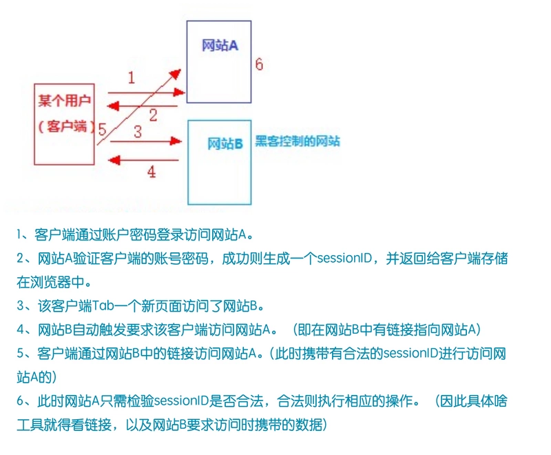

<!DOCTYPE html>
<html>
  <head><meta name="generator" content="Hexo 3.8.0">
    <meta charset="utf-8">
    
    <title>Cookie &amp; Session &amp; Token | HengGe</title>
    <meta name="viewport" content="width=device-width, initial-scale=1, maximum-scale=1">
    
    
      <link rel="icon" href="/favicon.png">
    

    <link rel="stylesheet" href="/css/style.css">

    <link rel="stylesheet" href="/js/google-code-prettify/tomorrow-night-eighties.min.css">

  </head>

  <body>
</body></html>
<header>
	<a id="logo" href="/" title="HengGe">
	</a>
	
	
		<!--搜索栏-->
		<i class="js-toggle-search iconfont icon-search"></i>


<form class="js-search search-form search-form--modal" method="get" action="http://gushi.li" role="search">
	<div class="search-form__inner">
		<div>
			<i class="iconfont icon-search"></i>
			<input class="text-input" placeholder="Enter Key..." type="search">
		</div>
	</div>
</form>
	

	
		<!--侧边导航栏-->
		<a id="nav-toggle" href="#"><span></span></a>

<nav>
	<div class="menu-top-container">
		<ul id="menu-top" class="menu">
			
				
				<li class="current-menu-item">
					<a href="https://hengge1226.github.io/2019/04/17/MVC&amp;MVVM/" target="_self">MVC &amp; MVVM</a>
				</li>
			
				
				<li class="current-menu-item">
					<a href="/2019/05/07/Wedcache/" target="_self">前端缓存浅谈</a>
				</li>
			
				
				<li class="current-menu-item">
					<a href="/2019/05/11/Cookie &amp; Session &amp; Token/" target="_self">Cookie &amp; Session &amp; Token</a>
				</li>
			
				
				<li class="current-menu-item">
					<a href="/2019/05/15/JS-Inherit/" target="_self">论JS继承</a>
				</li>
			
				
				<li class="current-menu-item">
					<a href="/2019/07/21/WebSecurity/" target="_self">前端安全问题防范</a>
				</li>
			
		</ul>
	</div>
</nav>
	

</header>
<div class="m-header ">
	<section id="hero1" class="hero">
		<div class="inner">
		</div>
	</section>
	
		<figure class="top-image" data-enable="true"></figure>
	
</div>

<!--文章列表-->
<div class="wrapper">
  
    <!--文章-->
<article>
	
  
    <h1 class="post-title" itemprop="name">
      Cookie &amp; Session &amp; Token
    </h1>
  

	<div class="post-body mb">
		<h1 id="Cookie-amp-Session-amp-Token"><a href="#Cookie-amp-Session-amp-Token" class="headerlink" title="Cookie &amp; Session &amp; Token"></a>Cookie &amp; Session &amp; Token</h1><p><strong>之前在学习缓存和身份验证的时候，无意间扰乱了自己对于Cookie &amp; Session &amp; Token三者的一些概念上的理解，所以写下此文，便于梳理自己的知识结构和分清三者的区别。</strong></p>
<hr>
<h4 id="首先，cookie-amp-session都是当下最流行的会话跟踪技术，由于HTTP是一种无状态的连接协议，服务器单单从网络连接中并不能确认客户端的用户身份和用户状态，所以为了实现这个需求，便出现了cooike-amp-session的会话跟踪机制。"><a href="#首先，cookie-amp-session都是当下最流行的会话跟踪技术，由于HTTP是一种无状态的连接协议，服务器单单从网络连接中并不能确认客户端的用户身份和用户状态，所以为了实现这个需求，便出现了cooike-amp-session的会话跟踪机制。" class="headerlink" title="首先，cookie &amp; session都是当下最流行的会话跟踪技术，由于HTTP是一种无状态的连接协议，服务器单单从网络连接中并不能确认客户端的用户身份和用户状态，所以为了实现这个需求，便出现了cooike &amp; session的会话跟踪机制。"></a><em>首先，cookie &amp; session都是当下最流行的会话跟踪技术，由于HTTP是一种无状态的连接协议，服务器单单从网络连接中并不能确认客户端的用户身份和用户状态，所以为了实现这个需求，便出现了cooike &amp; session的会话跟踪机制。</em></h4><h4 id="一、Cookie"><a href="#一、Cookie" class="headerlink" title="一、Cookie"></a>一、Cookie</h4><p>Cookie实际上是一小段的文本信息（文本文件）。</p>
<p>客户端请求服务器，如果服务器需要记录该用户状态，就使用response向客户端浏览器颁发一个Cookie。客户端浏览器会把Cookie保存起来。当浏览器再请求该网站时，浏览器把请求的网址连同该Cookie一同提交给服务器。服务器检查该Cookie，以此来辨认用户状态。此外，服务器还可以根据需要修改Cookie的内容。(cooike存放在客户端中，在请求时放在了req-header中，以便服务端确认)</p>
<p><br></p>
<hr>
<p><br></p>
<h4 id="二、Session"><a href="#二、Session" class="headerlink" title="二、Session"></a>二、Session</h4><p>session是另一种记录客户状态的机制，不同的是cookie保存在客户端浏览器中，而session保存在服务器上。</p>
<p>客户端浏览器访问服务器的时候，服务器把客户端信息以某种形式记录在服务器上，这就是session。客户端浏览器再次访问时只需要从该session中查找该客户的状态就可以了。</p>
<h5 id="同时我们也看到，由于采用服务器端保持状态的方案在客户端也需要保存一个标识，-不然因为HTTP的无状态性，服务端无法识别客户端的用户身份-，所以在使用session机制的时候也需要借助于cookie机制或者URL重写（如果客户端Cookie禁用）来达到保存标识的目的。"><a href="#同时我们也看到，由于采用服务器端保持状态的方案在客户端也需要保存一个标识，-不然因为HTTP的无状态性，服务端无法识别客户端的用户身份-，所以在使用session机制的时候也需要借助于cookie机制或者URL重写（如果客户端Cookie禁用）来达到保存标识的目的。" class="headerlink" title="同时我们也看到，由于采用服务器端保持状态的方案在客户端也需要保存一个标识，(不然因为HTTP的无状态性，服务端无法识别客户端的用户身份)，所以在使用session机制的时候也需要借助于cookie机制或者URL重写（如果客户端Cookie禁用）来达到保存标识的目的。"></a>同时我们也看到，由于采用服务器端保持状态的方案在客户端也需要保存一个标识，(不然因为HTTP的无状态性，服务端无法识别客户端的用户身份)，所以在使用session机制的时候也需要借助于<u>cookie机制或者URL重写</u>（如果客户端Cookie禁用）来达到保存标识的目的。</h5><p>所以一般来说，当使用session时，服务器向客户端浏览器发送一个名为JSESSIONID的Cookie，它的值为该Session的id，Session依据该Cookie来识别是否为同一用户。</p>
<p>而URL地址重写的原理是将该用户Session的id信息重写到URL地址中。服务器能够解析重写后的URL获取Session的id。</p>
<p><br></p>
<hr>
<p><br></p>
<h5 id="Cookie和Session的区别？"><a href="#Cookie和Session的区别？" class="headerlink" title="Cookie和Session的区别？"></a>Cookie和Session的区别？</h5><ul>
<li><p>Cookie是存在客户端，Session存在服务器，因为Session不会在网络上运输，而Cookie存储在本地，所以Session的安全性更高一点。 </p>
</li>
<li><p>Cookie如果不设置时间，当关闭浏览器时，Cookie就失效，不会在本地保存；Session的生命周期是一个会话（当启动浏览器到关闭浏览器）</p>
</li>
<li><p>在存储相对持久的信息时，应考虑使用 Cookie，因为 Cookie 可以以文件的形式，存储在客户端。在进行一些登录的验证及信息拦截的时候，可以使用 Session。</p>
</li>
</ul>
<p><br></p>
<h4 id="三、注意"><a href="#三、注意" class="headerlink" title="三、注意"></a>三、注意</h4><ul>
<li>现在大多都是Session + Cookie，但是只用session不用cookie，或是只用cookie，不用session在理论上都可以保持会话状态。可是实际中因为多种原因，一般不会单独使用</li>
<li>用session只需要在客户端保存一个id，实际上大量数据都是保存在服务端。如果全部用cookie，数据量大的时候客户端是没有那么多空间的。</li>
<li>如果只用cookie不用session，那么账户信息全部保存在客户端，一旦被劫持，全部信息都会泄露。并且客户端数据量变大，网络传输的数据量也会变大</li>
</ul>
<p><br></p>
<hr>
<p><br></p>
<h4 id="四、Cookie-amp-Session的安全问题"><a href="#四、Cookie-amp-Session的安全问题" class="headerlink" title="四、Cookie &amp; Session的安全问题"></a>四、Cookie &amp; Session的安全问题</h4><p><em>在使用Cookie &amp; Session机制来进行客户端身份验证的时候，遭受CSRF攻击便成为了一个需要解决的问题。</em></p>
<h5 id="那么，什么是CSRF攻击？"><a href="#那么，什么是CSRF攻击？" class="headerlink" title="那么，什么是CSRF攻击？"></a><strong>那么，什么是CSRF攻击？</strong></h5><p></p>
<p><strong>面对CSRF攻击，主要的防御措施有：</strong></p>
<ul>
<li>检查referer字段。HTTP头中有一个Referer字段，这个字段是用来标明请求来源于哪一个网址。通常来说，Referer字段应和请求的地址是在同一个域名下的。服务器可以通过判断Referer字段来判断请求的来源。 这种方法简单易行，但也有其局限性。http协议无法保证来访的浏览器的具体实现，可以通过篡改Referer字段的方式来进行攻击。</li>
<li>使用token</li>
</ul>
<hr>
<p><br></p>
<h4 id="五、Token"><a href="#五、Token" class="headerlink" title="五、Token"></a>五、Token</h4><h5 id="Token是什么？"><a href="#Token是什么？" class="headerlink" title="Token是什么？"></a><strong>Token是什么？</strong></h5><p>使用token机制的身份验证方法，在服务器端不需要存储用户的登录记录。大概的流程：</p>
<ul>
<li><em>客户端使用用户名和密码请求登录。服务端收到请求，验证用户名和密码。</em></li>
<li><em>验证成功后，服务端会生成一个token，然后把这个token发送给客户端。</em></li>
<li><em>客户端收到token后把它存储起来，可以放在cookie或者Local Storage（本地存储）里。</em></li>
<li><em>客户端每次向服务端发送请求的时候都需要带上服务端发给的token。</em></li>
<li>服务端收到请求，然后去验证客户端请求里面带着token，如果验证成功，就向客户端返回请求的数据。</li>
</ul>
<h5 id="Token为什么可以抵御CSRF攻击？"><a href="#Token为什么可以抵御CSRF攻击？" class="headerlink" title="Token为什么可以抵御CSRF攻击？"></a><strong>Token为什么可以抵御CSRF攻击？</strong></h5><p>CSRF 攻击之所以能够成功，是因为黑客可以完全伪造用户的请求，该请求中所有的用户验证信息都是存在于 cookie 中，因此黑客可以在不知道这些验证信息的情况下直接利用用户自己的 cookie 来通过安全验证。要抵御 CSRF，关键在于在请求中放入黑客所不能伪造的信息，并且该信息不存在于 cookie 之中。可以在 HTTP 请求中以参数的形式加入一个随机产生的 token，并在服务器端建立一个拦截器来验证这个 token，如果请求中没有 token 或者 token 内容不正确，则认为可能是 CSRF 攻击而拒绝该请求。</p>
<h5 id="Token机制和Session机制的区别？"><a href="#Token机制和Session机制的区别？" class="headerlink" title="Token机制和Session机制的区别？"></a><strong>Token机制和Session机制的区别？</strong></h5><p>看起来session的验证和token的验证很相似，都是从服务器返回一个数据，然后之后每次请求的时候都带着，发送给服务器验证。但其实是有很大不同的。</p>
<ul>
<li><p>session的session_id只是一个唯一标识的字符串，本身不存放任何信息，需要通过这个session_id来找到session，session才存放了相应的信息，其中包括用户的登陆状态，就算没有请求登陆或者登陆没有成功，依然会有session和session_id。而token本身就是在登陆成功后才会签发并返回的，而且token是一些参数和随机数按照某种规则生成的字符串，其中一个参数就是用户的信息，也就是说token本身就存放了用户的相关信息。我们只需要在服务器验证这个token是否是合法的就可以了。</p>
</li>
<li><p>session的使用需要配合cookie，我们知道只有浏览器才会去解析请求响应头里面的cookie。但现在经常会出现前后端分离的写法，通常都是后端提供接口，前端我们的客户端不止是浏览器，还有APP等其他客户端。这个时候cookie是不起作用的。但是token就没有这些问题，token可以被APP存放在内存当中，本身不局限于浏览器。也就是说token有更广的适用性</p>
</li>
</ul>
<p>  <br><br></p>
<hr>

	</div>
	<div class="meta split">
		
		<time class="post-date" datetime="2019-05-11T02:50:29.000Z" itemprop="datePublished">2019-05-11</time>
	</div>
</article>

<!--评论-->

	
<div class="ds-thread" data-thread-key="Cookie &amp; Session &amp; Token" data-title="Cookie &amp; Session &amp; Token" data-url="https://hengge1226.github.io/2019/05/11/Cookie &amp; Session &amp; Token/"></div>
<script type="text/javascript">

var duoshuoQuery = {short_name:"yumemor"};
	(function() {
		var ds = document.createElement('script');
		ds.type = 'text/javascript';ds.async = true;
		ds.src = (document.location.protocol == 'https:' ? 'https:' : 'http:') + '//static.duoshuo.com/embed.js';
		ds.charset = 'UTF-8';
		(document.getElementsByTagName('head')[0]
		 || document.getElementsByTagName('body')[0]).appendChild(ds);
	})();
</script>


  
</div>


  <svg id="bigTriangleColor" width="100%" height="40" viewbox="0 0 100 102" preserveaspectratio="none">
    <path d="M0 0 L50 100 L100 0 Z"/>
  </svg>

  


  <div class="wrapper"></div>


<div class="fat-footer">
	<div class="wrapper">
		<div class="layout layout--center">
			<div class="layout__item palm-mb">
				<div class="media">
					
					<div class="media__body">
						<h4>Ye.Guangheng</h4>
						<p class="site-description">Just Share My Life</p>
					</div>
				</div>
				<div class="author-contact">
					<ul>
						
							
							<li>
				        		<a href="http://weibo.com/" target="_blank">
				        			
				        				<i class="iconfont icon-weibo"></i>
				        			
				        		</a>
				        	</li>
						
							
							<li>
				        		<a href="https://github.com/HENGGE1226" target="_blank">
				        			
				        				<i class="iconfont icon-github"></i>
				        			
				        		</a>
				        	</li>
						
					</ul>
				</div>
			</div>
		</div>
	</div>
</div>

<footer class="footer" role="contentinfo">
	<div class="wrapper wrapper--wide split split--responsive">
		
		<span>Theme by <a href="http://github.com/justpsvm">justpsvm</a>. Powered by <a href="http://hexo.io">Hexo</a></span>
	</div>
</footer>

	<!-－这里导入了 lib.js 里面涵盖了 jQuery 等框架 所以注释掉-->
	<!--<script src="http://lib.sinaapp.com/js/jquery/2.0/jquery.min.js"></script>-->
	<script src="/js/lib.js"></script>
	<script src="/js/google-code-prettify/prettify.js"></script>
	<script src="/js/module.js"></script>
	<script src="/js/script.js"></script>
	
	<script type="text/javascript">
		//代码高亮
		$(document).ready(function(){
	 		$('pre').addClass('prettyprint linenums').attr('style', 'overflow:auto;');
   			prettyPrint();
		});
	</script>
	

